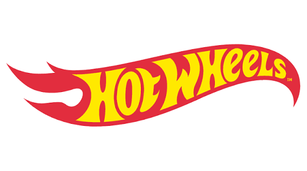

The first Hot Wheels cars
Mattel introduced Hot Wheels in 1968. The first release is widely known among collectors as the Original 16, a group of sixteen launch vehicles.
DIECAST DISTRICT / BRAND ENCYCLOPEDIA 01

A collector-friendly guide to the brand, product families, special releases and terminology used in the diecast community.
START HERE
Hot Wheels is a toy and die-cast vehicle brand introduced by Mattel in 1968. Its range grew from small cars designed for play into a broad world of vehicles, tracks, themed assortments and collector-focused releases.
Collectors may be interested in real-world replicas, fantasy castings, racing themes, pop-culture vehicles, special finishes, hard-to-find variations or simply finding a favourite car.
This guide is an introduction, not an official Mattel catalogue. Product names, availability, packaging and assortment structures can change by year and market.
QUICK NAVIGATION
THE STORY
Mattel introduced Hot Wheels in 1968. The first release is widely known among collectors as the Original 16, a group of sixteen launch vehicles.
Hot Wheels expanded its vehicle designs and playsets. Early cars with red-striped wheels became known to collectors as Redlines.
The Treasure Hunt concept added a special hunt within regular retail assortments, giving collectors another reason to inspect cars and packaging.
The Hot Wheels collecting community gained a dedicated club programme, known as the Red Line Club (RLC), with special collector releases.
Super Treasure Hunts became a distinct premium-style variation within the mainline hunt concept. Their identification details have evolved over time.
The brand spans basic cars, premium lines, themed assortments, monster trucks, remote-control products, track systems and special collector releases.
THE FOUNDATION
The familiar basic-car range, commonly sold as individual carded cars. It includes new castings, returning models, real-world vehicles and fantasy designs. Assortments and annual numbering can change.
A new model or casting is a vehicle design newly introduced to the range. A recolour is an existing casting released again with a different colour or decoration. A recolour is not automatically a new casting.
Miniature interpretations of vehicles made by real automotive manufacturers, such as sports cars, classics, supercars, trucks and race cars. Licensing and availability vary.
Original Hot Wheels vehicle designs rather than direct replicas of a specific production car. Some are inspired by racing, hot rods, science fiction or imaginative vehicle concepts.
Mainline describes a product range. Fantasy describes a type of vehicle design. A fantasy casting can therefore be part of the Mainline.
EXPLORE THE LINEUP
These are product families and themes collectors may encounter. Not every range is available in every country or every year.
The everyday basic-car assortment. It includes a broad mix of vehicles, themed mini-collections, new models and variations.
A label used for selected themed Hot Wheels assortments. Themes, packaging, vehicle mix and features can differ by release and market. Check the specific card or pack rather than assuming one fixed specification.
A collector-oriented premium family built around automotive themes. Many releases feature metal/metal construction and Real Riders wheels; check the individual product.
A themed set pairing a vehicle with a transporter. Popular with collectors who enjoy race support vehicles, haulers and matching car-and-truck displays.
Themed vehicles inspired by entertainment, characters, music, films, television or other pop-culture subjects. Themes and formats vary across releases.
A premium collector line featuring road, performance and enthusiast vehicles. Assortments and release formats vary over time.
A Hot Wheels vehicle family built around oversized wheels, bold truck designs and stunt-oriented play. It is different from the standard small-car Mainline.
Remote-control vehicles and related play products. These are powered RC products, not ordinary 1:64 die-cast cars. Features and scale depend on the model.
Red Line Club is a Hot Wheels collector membership programme associated with special releases and member-focused offerings. See the dedicated section below.
A premium collector-focused line with more elaborate model detailing and construction than a typical basic car. Features vary by release.
Vehicles based on recognisable characters or entertainment properties. They may use stylised designs rather than realistic car proportions.
Retailer exclusives, anniversary assortments, multipacks, convention releases and other special editions. Identify each by its exact release information.
Premium, Silver Series, Special Series and retailer exclusives are not interchangeable labels. Product construction and contents can vary. Use the packaging and official product description for the exact release.
THE HUNT
Treasure Hunts are special models hidden within selected Hot Wheels Mainline assortments. Modern examples can be identified using the relevant low-production flame symbol on the car and/or packaging. Details have changed across different years.
A Super Treasure Hunt is a special upgraded variation associated with selected Mainline castings. Modern examples are commonly recognised by Spectraflame-style paint, Real Riders wheels and a TH marking, but check the release year.
A Treasure Hunt and a Super Treasure Hunt are not the same. Their identification details have changed over time. A flame graphic by itself is not proof that a car is a Treasure Hunt; verify the exact model, year and packaging.
SPECIAL FINDS
Collectors use “chase” for a specially designated, harder-to-find version included in certain product lines or assortments. The exact meaning and identifying features depend on the specific series.
Some premium assortments have chase versions with distinctive finishes, colours or decorations. A chase model is not automatically a Super Treasure Hunt, and not every special-looking car is a chase.
Identify the series first, then check release-specific information from Mattel or a reliable collector reference. Avoid assuming rarity from a seller's title alone.
FOR THE DEDICATED COLLECTOR
RLC stands for Red Line Club, a Hot Wheels collector membership programme associated with special releases and member-focused offerings through Mattel's official collector channels. Membership terms and availability can change.
RLC-branded releases are distinct from ordinary Mainline cars. Individual models may have special finishes, wheels, packaging or other features. Not every RLC car has identical specifications.
Some special Hot Wheels releases are connected to collector conventions or events. These may have event-specific packaging or decorations and should be identified by exact release information.
Selected models or assortments may be exclusive to a particular retailer or market. The country, retailer and release year matter when identifying them.
SPEAK THE COLLECTOR LANGUAGE
A name for early Hot Wheels cars, especially models from the 1968–1977 era with red-striped wheels. Reissues can complicate identification, so check full model details.
A distinctive translucent, candy-like metallic finish associated with selected Hot Wheels releases, including many Super Treasure Hunts and collector editions.
A Hot Wheels term for rubber-style tyres used on selected premium and collector models. Check product details to confirm.
An acronym for zinc, aluminium, magnesium and copper. In collecting, it often refers to editions showing an unpainted or minimally coated metal body.
A stylised design approach that gives a vehicle exaggerated proportions and a playful appearance.
A scale compares model size with the real vehicle. Many Hot Wheels cars are approximately 1:64, but dimensions vary by casting.
The underlying vehicle mould/design. One casting can appear in multiple colours, wheel types, decorations or releases.
Collector shorthand for printed decorations or graphics applied to a model.
A car still attached to its original card and blister packaging.
A model removed from its original packaging.
A difference between releases of the same casting, such as colour, wheels, base, interior or printed details.
A package containing several cars together, such as a 5-pack or 10-pack. Contents may differ from single-card assortments.
YOUR COLLECTION, YOUR RULES
Choose a theme that interests you: a favourite car maker, motorsport, movie vehicles, fantasy designs or a particular casting.
Compare the exact casting, release year, packaging and condition. A high asking price does not prove rarity or value.
Keep cars clean and dry, avoid prolonged direct sunlight and use suitable storage or display options.
For carded models, collectors may consider card corners, creases, blister condition and whether the package has been opened.
Record model name, casting, series, year, purchase details and variations that matter to you.
Verify special editions through packaging and trustworthy references. Be cautious with listings that use “rare”, “chase” or “STH” without evidence.
READY TO BUILD YOUR GARAGE?
Add your favourite Hot Wheels models to your personal Diecast District collection.
Visit My Garage ↗QUICK ANSWERS
They describe different things. Mainline is a product range; fantasy describes a vehicle design. A fantasy casting can be part of the Mainline.
No. TH and STH are different. Super Treasure Hunts are special upgraded variations; use release-specific identification details.
No. Chase is a broader collector term used for special versions in selected lines. An STH is a specific Hot Wheels Mainline variation.
No. Hot Wheels makes vehicles and products in different sizes. Many basic cars are described as approximately 1:64, but dimensions vary.
Not necessarily. A date on the base can refer to the casting's copyright or design date rather than the exact year that particular car was manufactured.
Many premium releases use metal bodies, metal bases and Real Riders tyres, but product details can vary. Check the specific release packaging.
KEEP LEARNING
Diecast District is an independent collector project and is not affiliated with or endorsed by Mattel. Product names and trademarks belong to their respective owners. Information is general; verify individual releases using packaging and official product details.